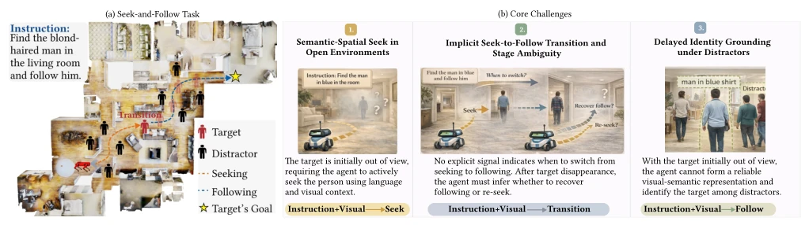
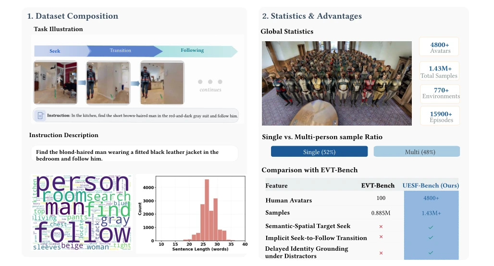
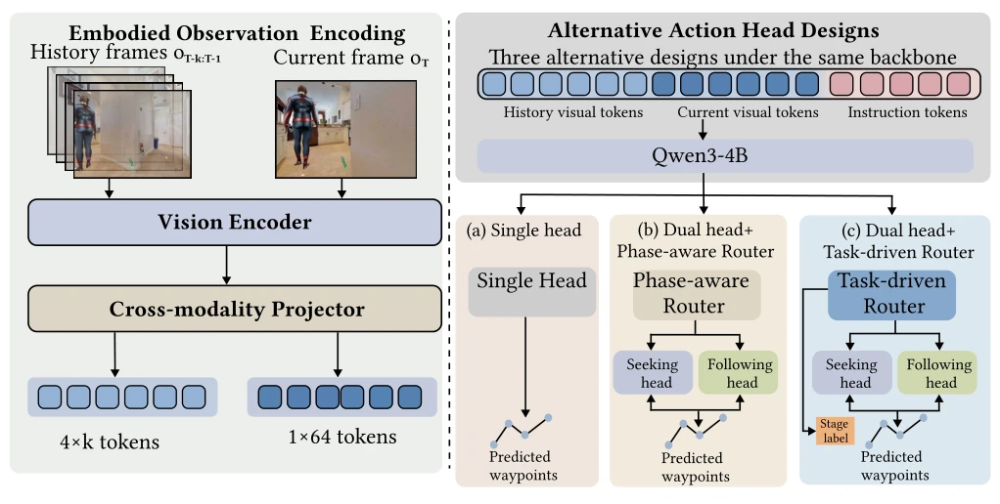
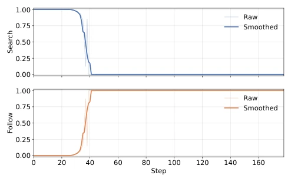

This paper finally transforms the task of "finding people" from "pretending to see" to "actually finding." Previous benchmarks like EVT-Bench [28] assume the target is always in sight, which is essentially giving the robot a cheat code, ignoring the pain point that targets are often invisible in the real world. The authors created a large dataset UESF-Bench with 1.43 million samples, integrating "searching" and "following" together, adding distractors, and maximizing the difficulty. The model SeekFollow-VLA did not use fancy tricks; the core is the "task-driven router," letting the model guess whether it should search or follow now. The most ironic thing is that previously models started following even without seeing the target; now they finally learn to search first then follow, although they occasionally get lost while searching, at least the direction is correct. Although the success rate still drops to 20% when multiple people are present, it is at least better than bumping around blindly. This work adds a big piece to the puzzle of embodied AI's "person recognition" ability, but it is unknown if the real robot will crash on the spot due to not finding people, after all, distractors in simulation might be much simpler than real humans' "hide-and-seek".
For embodied AI to be deployed, merely following people is not enough; it must first be able to find people in complex environments. Existing work like EVT-Bench [28] assumes the target is initially visible, which is too idealized; in reality, people are often out of view, causing models to fail to learn global spatial relationships. Although some research studies language-guided search [7, 20], most rely on prior knowledge or specific scenarios, and stop after finding, not considering subsequent continuous following. This fragmentation causes models to be unable to handle the implicit switching of "search-follow"; once the target is lost or distractors appear, the robot gets confused. Therefore, building a unified large-scale benchmark to evaluate semantic-guided exploration, behavior switching, and anti-interference capability is key to solving real-world interaction continuity, and is a necessary step to fill the gaps in existing research regarding long-horizon decision-making and identity consistency.

Figure 1: Overview of the embodied visual seek-and-follow task, its core challenges.

Figure 2: Overview and statistics of UESF-Bench. UESF-Bench contains 4800+ diverse humanoid avatars and 1.43M+ embodied visual seek-and-follow samples from 770+ environments under both single-person and multi-person settings.
SeekFollow-VLA builds a VLA framework based on Qwen3-4B. Inputs are historical RGB frames and instructions; first, DINO-V3 and SigLIP dual-tower encode visual features, which are fused into the LLM via a projector. Visual tokens use a sliding window mechanism; historical frames use coarse granularity, current frames use fine granularity to balance efficiency. Specifically, the number of visual patches is set to 576; historical frames use 4x grid pooling compression, current frames retain 64 tokens. The core innovation lies in the action head design: comparing SingleHead, DualHead (Phase-Aware Routing), and DualHead (Task-Driven Routing). Task-driven routing not only outputs weights but also introduces auxiliary stage supervision loss to clearly distinguish "search" and "follow" modes. This design solves the mode confusion problem caused by implicit stage switching, allowing the model to dynamically allocate behavior weights based on the current state, achieving a smooth transition from exploration to tracking, especially when the target is lost, needing to judge whether to resume following or re-search.

Figure 3: Architecture of SeekFollow-VLA. The model encodes historical and current observations into visual tokens, projects them into the language space, and combines them with instruction tokens in a shared Qwen3-4B backbone. On top of this backbone, we study three alternative action head designs for embodied seek-and-follow: a single head, dual heads with a phase-aware router, and dual heads with a task-driven router.
The dataset UESF-Bench contains 1.43 million samples, covering 770+ scenes and 4800+ avatars, including single-person and multi-person scenarios. Evaluation metrics include TSR, CR, FR, and Search SPL. In single-person testing, DualHead-TD's TSR reaches 0.35, far exceeding SingleHead's 0.04. In multi-person scenarios, difficulty surges, TSR drops to 0.20, but DualHead-TD still significantly outperforms the baseline. Ablation studies show that task-driven routing effectively reduces mode confusion, especially when distractors exist, explicit stage supervision is more reliable than implicit phase-aware. Router weight visualization also confirms the model can clearly divide the two stages; once the target is found, search weights quickly zero out, follow weights spike, demonstrating good stage awareness capability.

Figure 4: Router weights 𝑝seek and 𝑝follow over episode time.